library(tidyverse)
library(dslabs)
library(gridExtra)Effective Visualizations
Readings
- This page.
Guiding Questions
- Why do we create visualizations? What types of data are best suited for visuals?
- How do we best visualize the variability in our data?
- What makes a visual compelling?
- What are the worst visuals? Which of these are most frequently used? Why?
As with last week’s content, the technical aspects of this lecture will be explored in greater detail in the Thursday practical lecture. Today, we will focus on some principles.
“The greatest value of a picture is when it forces us to notice what we never expected to see.” – John Tukey
Data visualization principles
We have already provided some rules to follow as we created plots for our examples. Here, we aim to provide some general principles we can use as a guide for effective data visualization. Much of this section is based on a talk by Karl Broman1 titled “Creating Effective Figures and Tables”2 and includes some of the figures which were made with code that Karl makes available on his GitHub repository3, as well as class notes from Peter Aldhous’ Introduction to Data Visualization course4. Following Karl’s approach, we show some examples of plot styles we should avoid, explain how to improve them, and use these as motivation for a list of principles. We compare and contrast plots that follow these principles to those that don’t.
The principles are mostly based on research related to how humans detect patterns and make visual comparisons. The preferred approaches are those that best fit the way our brains process visual information. When deciding on a visualization approach, it is also important to keep our goal in mind. We may be comparing a viewable number of quantities, describing distributions for categories or numeric values, comparing the data from two groups, or describing the relationship between two variables. As a final note, we want to emphasize that for a data scientist it is important to adapt and optimize graphs to the audience. For example, an exploratory plot made for ourselves will be different than a chart intended to communicate a finding to a general audience.
Load some packages
We will be using these libraries—note the addition of gridExtra. I trust you to notice and install new packages from here on out:
A Starting List (from Tufte)
Show data variation, not design variation.
The number of information carrying (variable) dimensions depicted should not exceed the number of dimensions in the data. Graphics must not quote data out of context.
Clear, detailed and thorough labeling should be used to defeat graphical distortion and ambiguity. Write out explanations of the data on the graph itself. Label important events in the data.
Viewers eyes will follow a predictable path. Visual cues serve to light up that path.
The representation of numbers, as physically measured on the surface of the graph itself, should be directly proportional to the numerical quantities represented.
Empty space is informative. Do not fill every inch, but let the absence of information guide the viewer.
When possible (and in a visually suitable way), show the data.
Encoding data using visual cues
Visual cues are any element of design that gives the viewer clues as to how to use the object. For instance, we can look at door handles like these

and know exactly what to do with them. We don’t even need the “PUSH” and “PULL” – approaching just the pull handle in the wild gives sufficient visual cues that you know the door is a “pull” door. Encountering a metal plate with no handle is going to imply “push”. If the door on the right were a “push” door, you’d be momentarily confused! It would be poor design. Your plots should use visual cues to help readers understand how to use them with no confusion.
We start by describing some principles for encoding data. There are several approaches at our disposal including position, aligned lengths, angles, area, brightness, and color hue.
To illustrate how some of these strategies compare, let’s suppose we want to report the results from two hypothetical polls regarding browser preference taken in 2000 and then 2015. For each year, we are simply comparing five quantities – the five percentages. A widely used graphical representation of percentages, popularized by Microsoft Excel, is the pie chart:
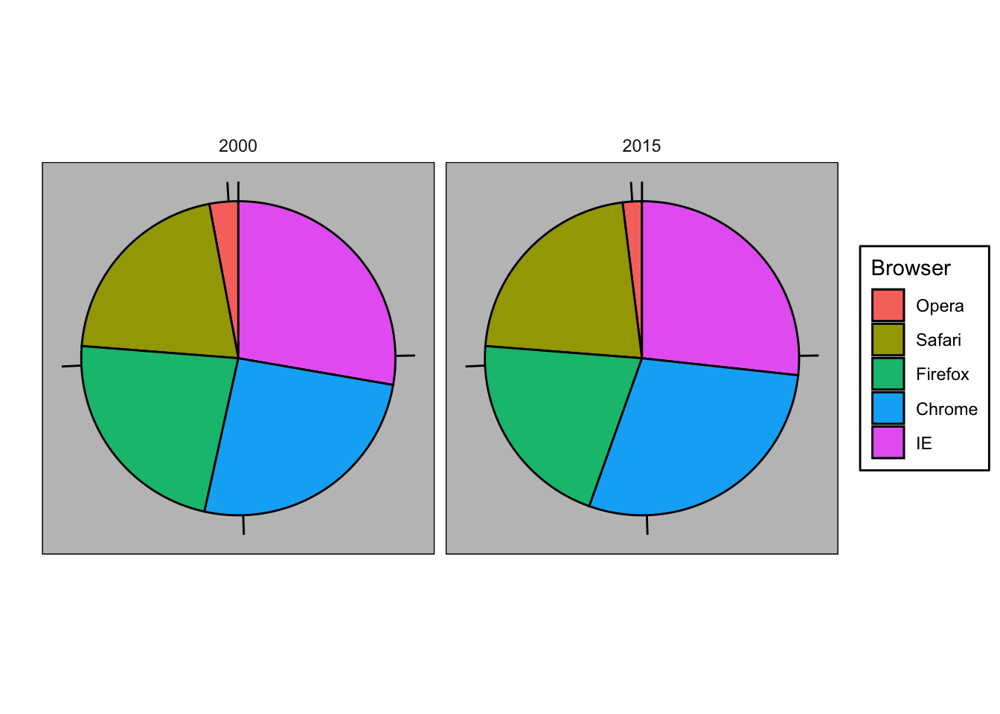
Looking at the above graph(s), what are the visual cues here?
Here we are representing quantities with both areas and angles, since both the angle and area of each pie slice are proportional to the quantity the slice represents. This turns out to be a sub-optimal choice since, as demonstrated by perception studies, humans are not good at precisely quantifying angles and are even worse when area is the only available visual cue. This plot fails to be a useful visual cue. The donut chart is an example of a plot that uses only area:
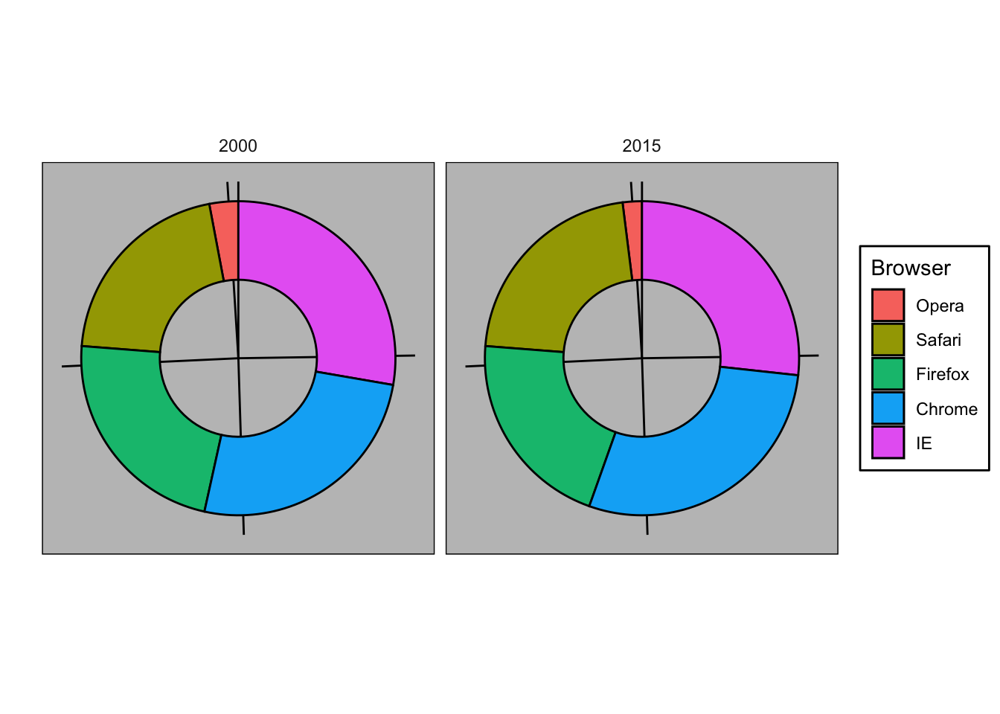
To see how hard it is to quantify angles and area, note that the rankings and all the percentages in the plots above changed from 2000 to 2015. Can you determine the actual percentages and rank the browsers’ popularity? Can you see how the percentages changed from 2000 to 2015? It is not easy to tell from the plot. In fact, the pie R function help file states that:
Pie charts are a very bad way of displaying information. The eye is good at judging linear measures and bad at judging relative areas. A bar chart or dot chart is a preferable way of displaying this type of data.
In this case, simply showing the numbers is not only clearer, but would also save on printing costs if printing a paper copy:
| Browser | 2000 | 2015 |
|---|---|---|
| Opera | 3 | 2 |
| Safari | 21 | 22 |
| Firefox | 23 | 21 |
| Chrome | 26 | 29 |
| IE | 28 | 27 |
The preferred way to plot these quantities is to use length and position as visual cues, since humans are much better at judging linear measures. The barplot uses this approach by using bars of length proportional to the quantities of interest. By adding horizontal lines at strategically chosen values, in this case at every multiple of 10, we ease the visual burden of quantifying through the position of the top of the bars. Compare and contrast the information we can extract from the two figures.
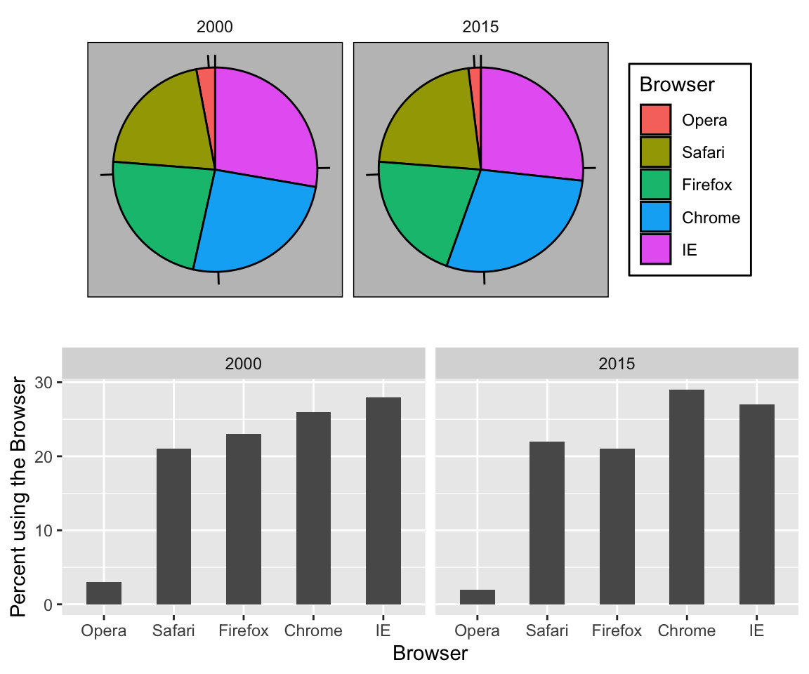
Notice how much easier it is to see the differences in the barplot. In fact, we can now determine the actual percentages by following a horizontal line to the x-axis.
If for some reason you need to make a pie chart, label each pie slice with its respective percentage so viewers do not have to infer them from the angles or area:
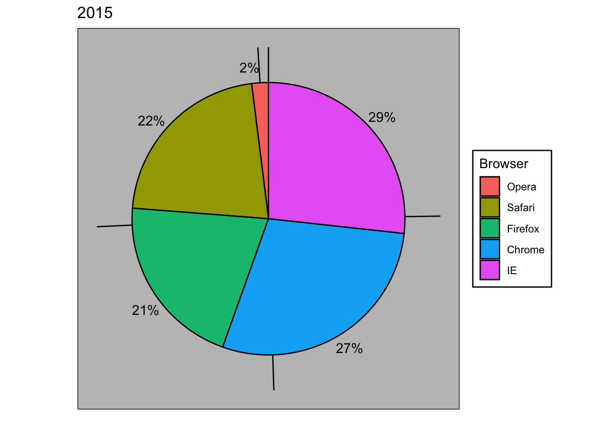
In general, when displaying quantities, position and length are preferred over angles and/or area as position and length provide better visual cues. Brightness and color are even harder to quantify than angles. But, as we will see later, they are sometimes useful when more than two dimensions must be displayed at once.
Avoid pseudo-three-dimensional plots
The figure below, taken from the scientific literature5, shows three variables: dose, drug type and survival. Although your screen/book page is flat and two-dimensional, the plot tries to imitate three dimensions and assigned a dimension to each variable.
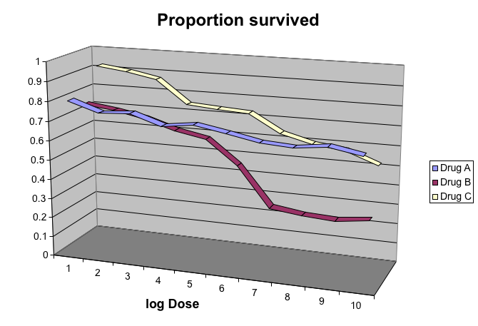
Humans are not good at seeing in three dimensions (which explains why it is hard to parallel park) and our limitation is even worse with regard to pseudo-three-dimensions. To see this, try to determine the values of the survival variable in the plot above. Can you tell when the purple ribbon intersects the red one? This is an example in which we can easily use color to represent the categorical variable instead of using a pseudo-3D:
##First read data
url <- "https://github.com/kbroman/Talk_Graphs/raw/master/R/fig8dat.csv"
dat <- read.csv(url)
##Now make alternative plot
dat %>% gather(drug, survival, -log.dose) %>%
mutate(drug = gsub("Drug.","",drug)) %>%
ggplot(aes(log.dose, survival, color = drug)) +
geom_line()
Notice how much easier it is to determine the survival values.
Pseudo-3D is sometimes used completely gratuitously: plots are made to look 3D even when the 3rd dimension does not represent a quantity. This only adds confusion and makes it harder to relay your message. Here are two examples:


Question: Which of the Tufte design principles above are violated by these plots?
Avoid too many significant digits
By default, statistical software like R returns many significant digits. The default behavior in R is to show 7 significant digits. That many digits often adds no information and the added visual clutter can make it hard for the viewer to understand the message. As an example, here are the per 10,000 disease rates, computed from totals and population in R, for California across the five decades:
| state | year | Measles | Pertussis | Polio |
|---|---|---|---|---|
| California | 1940 | 37.8826320 | 18.3397861 | 0.8266512 |
| California | 1950 | 13.9124205 | 4.7467350 | 1.9742639 |
| California | 1960 | 14.1386471 | NA | 0.2640419 |
| California | 1970 | 0.9767889 | NA | NA |
| California | 1980 | 0.3743467 | 0.0515466 | NA |
We are reporting precision up to 0.00001 cases per 10,000, a very small value in the context of the changes that are occurring across the dates. In this case, two significant figures is more than enough and clearly makes the point that rates are decreasing:
| state | year | Measles | Pertussis | Polio |
|---|---|---|---|---|
| California | 1940 | 37.9 | 18.3 | 0.8 |
| California | 1950 | 13.9 | 4.7 | 2.0 |
| California | 1960 | 14.1 | NA | 0.3 |
| California | 1970 | 1.0 | NA | NA |
| California | 1980 | 0.4 | 0.1 | NA |
Useful ways to change the number of significant digits or to round numbers are signif and round. You can define the number of significant digits globally by setting options like this: options(digits = 3).
Another principle related to displaying tables is to place values being compared on columns rather than rows. Note that our table above is easier to read than this one:
| state | disease | 1940 | 1950 | 1960 | 1970 | 1980 |
|---|---|---|---|---|---|---|
| California | Measles | 37.9 | 13.9 | 14.1 | 1 | 0.4 |
| California | Pertussis | 18.3 | 4.7 | NA | NA | 0.1 |
| California | Polio | 0.8 | 2.0 | 0.3 | NA | NA |
Know your audience
Graphs can be used for 1) our own exploratory data analysis, 2) to convey a message to experts, or 3) to help tell a story to a general audience. Make sure that the intended audience understands each element of the plot.
As a simple example, consider that for your own exploration it may be more useful to log-transform data and then plot it. However, for a general audience that is unfamiliar with converting logged values back to the original measurements, using a log-scale for the axis instead of log-transformed values will be much easier to digest.
Know when to include 0
When using barplots, it is misinformative not to start the bars at 0. This is because, by using a barplot, we are implying the length is proportional to the quantities being displayed – a natural visual cue. By avoiding 0, relatively small differences can be made to look much bigger than they actually are. This approach is often used by politicians or media organizations trying to exaggerate a difference. Below is an illustrative example used by Peter Aldhous in this lecture: http://paldhous.github.io/ucb/2016/dataviz/week2.html.

From the plot above, it appears that apprehensions have almost tripled when, in fact, they have only increased by about 16%. Starting the graph at 0 illustrates this clearly:
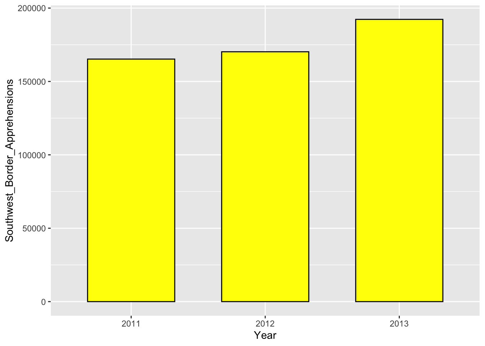
Here is another example, described in detail in a Flowing Data blog post:

This plot makes a 13% increase look like a five fold change. Here is the appropriate plot:
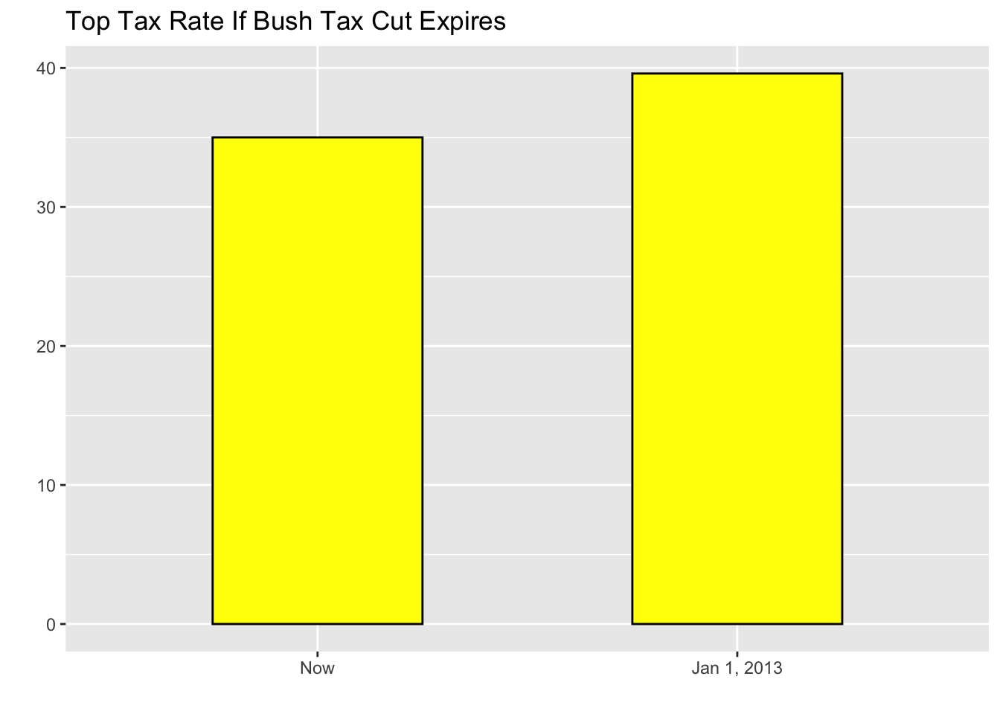
Finally, here is an extreme example that makes a very small difference of under 2% look like a 10-100 fold change:

(note: this is a years-old graphic, yet timely yet again)
Here is the appropriate plot:
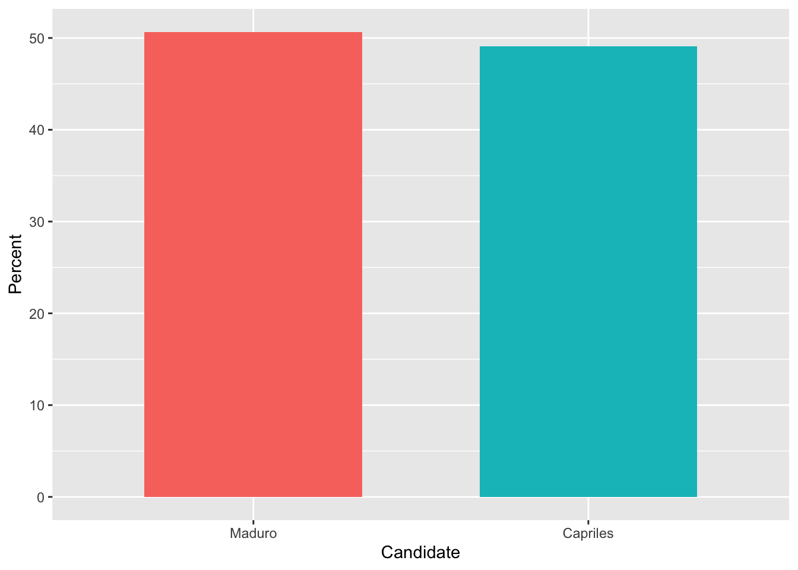
When using position rather than length, it is then not necessary to include 0. This is particularly the case when we want to compare differences between groups relative to the within-group variability. Here is an illustrative example showing country average life expectancy stratified across continents in 2012:
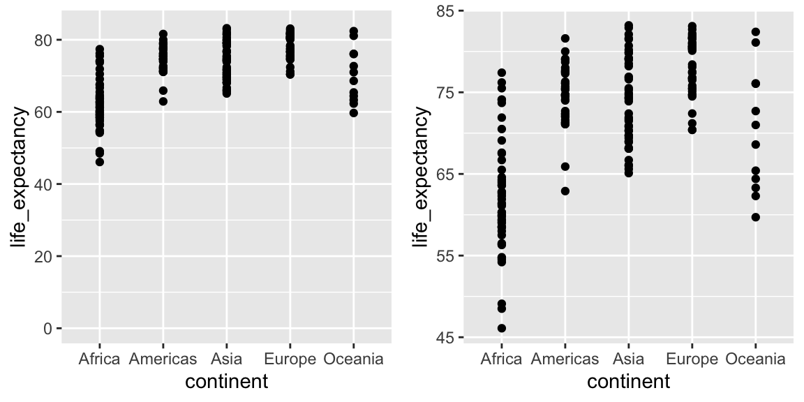
Note that in the plot on the left, which includes 0, the space between 0 and 43 adds no information and makes it harder to compare the between and within group variability.
Do not distort quantities
During President Barack Obama’s 2011 State of the Union Address, the following chart was used to compare the US GDP to the GDP of four competing nations:

Judging by the area of the circles, the US appears to have an economy over five times larger than China’s and over 30 times larger than France’s. However, if we look at the actual numbers, we see that this is not the case. The actual ratios are 2.6 and 5.8 times bigger than China and France, respectively. The reason for this distortion is that the radius, rather than the area, was made to be proportional to the quantity, which implies that the proportion between the areas is squared: 2.6 turns into 6.5 and 5.8 turns into 34.1. Here is a comparison of the circles we get if we make the value proportional to the radius and to the area:
gdp <- c(14.6, 5.7, 5.3, 3.3, 2.5)
gdp_data <- data.frame(Country = rep(c("United States", "China", "Japan", "Germany", "France"),2),
y = factor(rep(c("Radius","Area"),each=5), levels = c("Radius", "Area")),
GDP= c(gdp^2/min(gdp^2), gdp/min(gdp))) %>%
mutate(Country = reorder(Country, GDP))
gdp_data %>%
ggplot(aes(Country, y, size = GDP)) +
geom_point(show.legend = FALSE, color = "blue") +
scale_size(range = c(2,25)) +
coord_flip() +
ylab("") + xlab("") # identical to labs(y = "", x = "")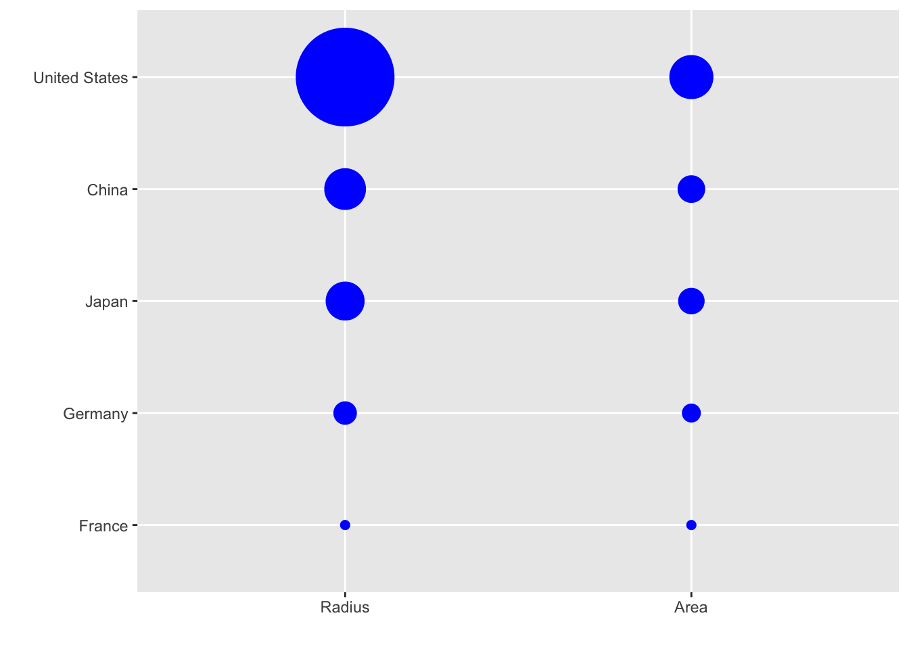
Not surprisingly, ggplot2 defaults to using area rather than radius. Of course, in this case, we really should not be using area at all since we can use position and length:
gdp_data %>%
filter(y == "Area") %>%
ggplot(aes(Country, GDP)) +
geom_bar(stat = "identity", width = 0.5) +
labs(y = "GDP in trillions of US dollars")Order categories by a meaningful value
When one of the axes is used to show categories, as is done in barplots, the default ggplot2 behavior is to order the categories alphabetically when they are defined by character strings. If they are defined by factors, they are ordered by the factor levels. We rarely want to use alphabetical order. Instead, we should order by a meaningful quantity. In all the cases above, the barplots were ordered by the values being displayed. The exception was the graph showing barplots comparing browsers. In this case, we kept the order the same across the barplots to ease the comparison. Specifically, instead of ordering the browsers separately in the two years, we ordered both years by the average value of 2000 and 2015.
We can use the reorder function, which helps us achieve this goal. This will let us re-order the levels of a factor variable. It is different from using order() or arrange() because it only changes the order in which a factor variable is recorded. That is, it doesn’t change the order of the data, it changes the order of the factor levels, and those factor levels are used by ggplot to determine the plotting position.
To appreciate how the right order can help convey a message, suppose we want to create a plot to compare the murder rate across states. We are particularly interested in the most dangerous and safest states. Note the difference when we order alphabetically (the default) versus when we order by the actual rate:
data(murders)
p1 <- murders %>% mutate(murder_rate = total / population * 100000) %>%
ggplot(aes(x = state, y = murder_rate)) +
geom_bar(stat="identity") +
coord_flip() +
theme(axis.text.y = element_text(size = 8)) +
xlab("")
p2 <- murders %>% mutate(murder_rate = total / population * 100000) %>%
mutate(state = reorder(state, murder_rate)) %>% # here's the magic!
ggplot(aes(x = state, y = murder_rate)) +
geom_bar(stat="identity") +
coord_flip() +
theme(axis.text.y = element_text(size = 8)) +
xlab("")
grid.arrange(p1, p2, ncol = 2) # we'll cover this later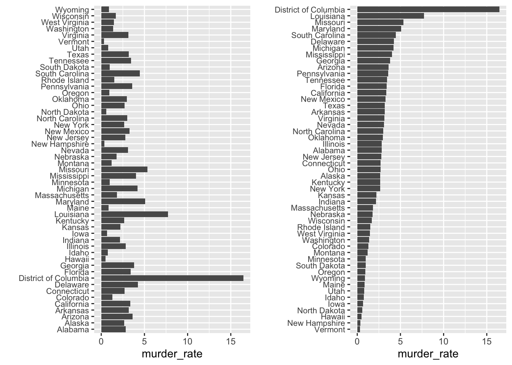
We can make the second plot like this:
The reorder function lets us reorder groups as well. Earlier we saw an example related to income distributions across regions. Here are the two versions plotted against each other:
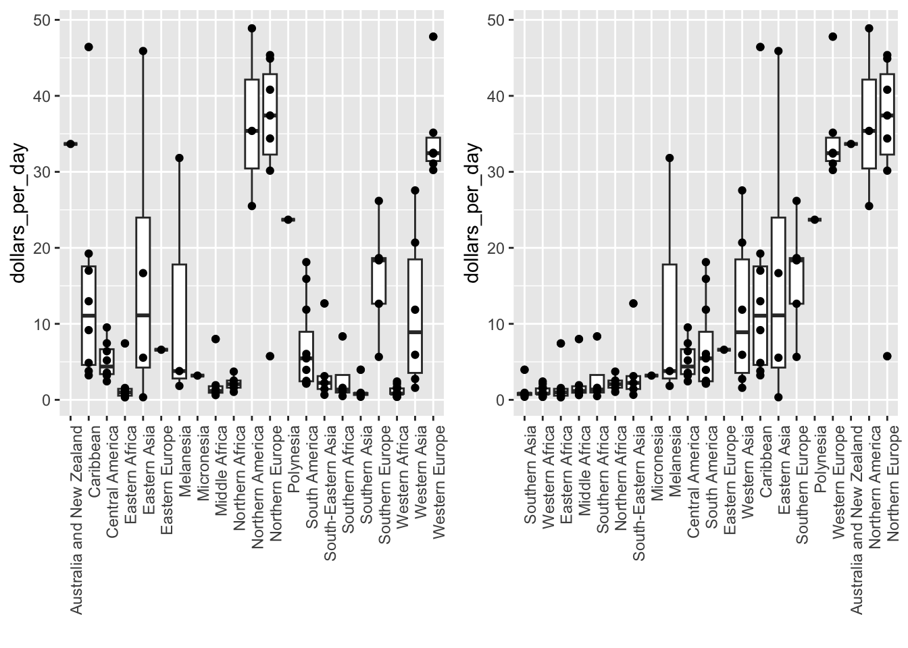
The first orders the regions alphabetically, while the second orders them by the group’s median.
Show the data
We have focused on displaying single quantities across categories. We now shift our attention to displaying data, with a focus on comparing groups.
To motivate our first principle, “show the data”, we go back to our artificial example of describing heights to a person who is unaware of some basic facts about the population of interest (and is otherwise unsophisticated). This time let’s assume that this person is interested in the difference in heights between males and females. A commonly seen plot used for comparisons between groups, popularized by software such as Microsoft Excel, is the dynamite plot, which shows the average and standard errors.10 The plot looks like this:
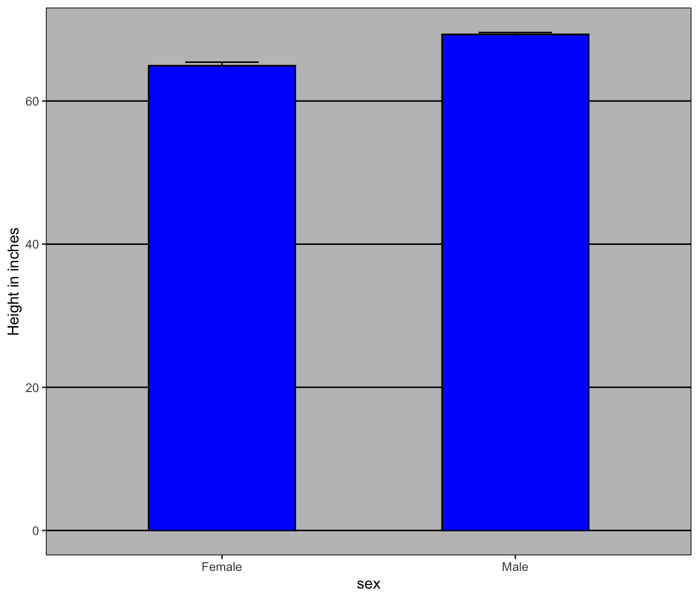
The average of each group is represented by the top of each bar and the antennae extend out from the average to the average plus two standard errors. If all ET receives is this plot, he will have little information on what to expect if he meets a group of human males and females. The bars go to 0: does this mean there are tiny humans measuring less than one foot? Are all males taller than the tallest females? Is there a range of heights? ET can’t answer these questions since we have provided almost no information on the height distribution.
This brings us to our first principle: show the data. This simple ggplot2 code already generates a more informative plot than the barplot by simply showing all the data points:

For example, this plot gives us an idea of the range of the data. However, this plot has limitations as well, since we can’t really see all the 238 and 812 points plotted for females and males, respectively, and many points are plotted on top of each other. As we have previously described, visualizing the distribution is much more informative. But before doing this, we point out two ways we can improve a plot showing all the points.
The first is to add jitter, which adds a small random shift to each point. In this case, adding horizontal jitter does not alter the interpretation, since the point heights do not change, but we minimize the number of points that fall on top of each other and, therefore, get a better visual sense of how the data is distributed. A second improvement comes from using alpha blending: making the points somewhat transparent. The more points fall on top of each other, the darker the plot, which also helps us get a sense of how the points are distributed. Here is the same plot with jitter and alpha blending:
heights %>%
ggplot(aes(sex, height)) +
geom_jitter(width = 0.1, alpha = 0.2)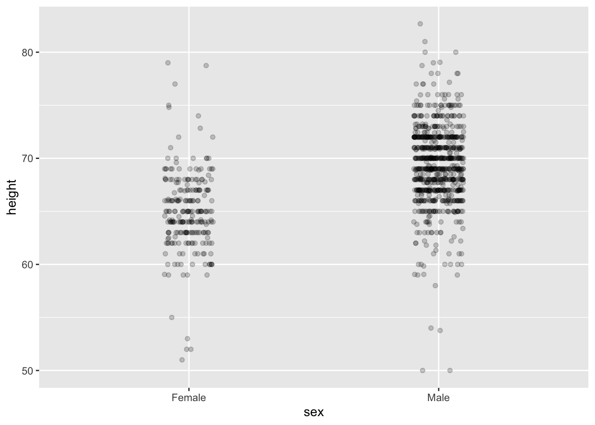
Now we start getting a sense that, on average, males are taller than females. We also note dark horizontal bands of points, demonstrating that many report values that are rounded to the nearest integer.
Faceting
Looking at the previous plot, it’s easy to tell that males tend to be taller than females. Before, we showed how we can plot two distributions over each other using an aesthetic mapping. Something like this:
heights %>%
ggplot(aes(x = height, fill = sex)) +
geom_histogram(alpha = .5, show.legend = TRUE) +
labs(fill = 'Sex')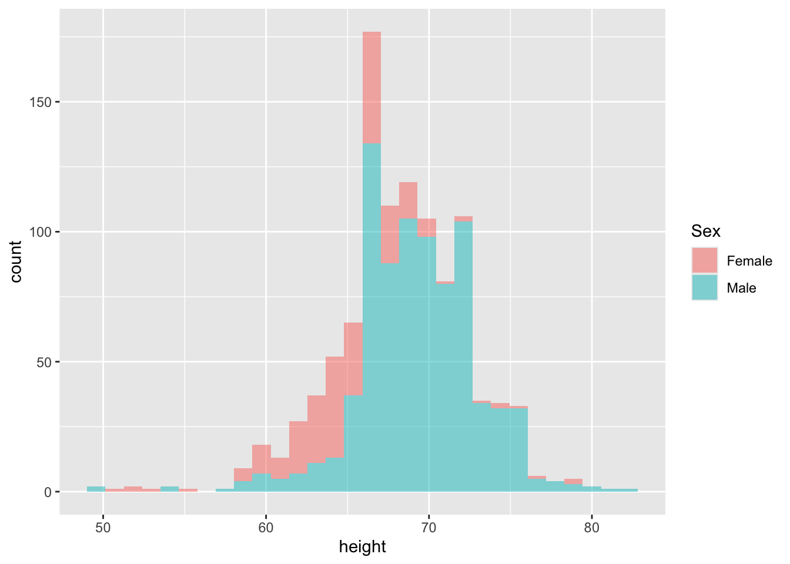
Sometimes, putting the plots on top of each other, even with a well-chosen alpha, does not clearly communicate the differences in the distribution. When we want to compare side-by-side, we will often use facets. Facets are a bit like supercharged aesthetic mapping because they let us separate plots based on categorical variables, but instead of putting them together, we can have side-by-side plots.
Two functions in ggplot give facets: facet_wrap and facet_grid. We’ll use facet_grid as this is a little more powerful.
Facets are added as an additional layer like this: + facet_grid(. ~ sex). Inside the function, we have a “formula” that is written without quotes (which is unusual for R). Since facet_grid takes a “formula”, all we have to do to facet is decide how we want to lay out our plots. If we want each of the faceting groups to lie along the vertical axis, we put the variable on which we want to facet before the “~”, and after the “~” we simply put a period. If we want the groups to lie along the horizontal axis, we put the variable after the “~” and the period before. In the example, we’ll separate the histogram by drawing them side by side along the horizontal axis.
heights %>%
ggplot(aes(x = height)) +
geom_histogram(binwidth = 1, color="black") +
facet_grid(.~sex)This would be the result if we took the females, plotted the histogram, then took the males, made another histogram, and then put them side by side. But we do it in one command by adding +facet_grid(...)
Use common axes with facets
Since we have plots side-by-side, they can have different scales along the x-axis (or along the y-axis if we were stacking with sex ~ .). We want to be careful here - if we don’t have matching scales on these axes, then it’ll be really hard to visually see differences in the distribution.
As an example of what not to do, and to show that we can use the scales argument in facet_grid, we can allow the x-axis to freely scale between the plots. This makes it hard to tell that males are, on average, taller because the average male height, despite being larger than the average female height (70 vs. 65 or so) falls in the same location within the plot box. Note that 80 is the extreme edge for the left plot, but not in the right plot.
heights %>%
ggplot(aes(height)) +
geom_histogram(binwidth = 1, color="black") +
facet_grid(. ~ sex, scales = "free_x")Align plots vertically to see horizontal changes and horizontally to see vertical changes
In these histograms, the visual cue related to decreases or increases in height are shifts to the left or right, respectively: horizontal changes. Aligning the plots vertically helps us see this change when the axes are fixed:
heights %>%
ggplot(aes(height)) +
geom_histogram(binwidth = 1, color="black") +
facet_grid(. ~ sex)
This plot makes it much easier to notice that men’s heights are, on average, higher.
The sample size of females is smaller than of males – that is, we have more males in the data. Try table(heights$sex) to see this. It’s also clear from the above plot because the height of the bars on the y-axis (count) are smaller for females. If we are interested in the distribution within our sample, this is useful. If we’re interested in the distribution of females vs. the distribution of males, we might want to re-scale the y-axis. Here we use scales = 'free_y' to allow each of the y-axes to have their own scale. Pay close attention to the axis labels now!
p2 <- heights %>%
ggplot(aes(height)) +
geom_histogram(binwidth = 1, color="black") +
facet_grid(sex~., scales = 'free_y')
p2We still have count on the y-axis, so we didn’t switch to density (though it would look the same). Instead, we rescaled the y-axis, which gives us a different perspective but still contains the count information.
If we want the more compact summary provided by boxplots, we then align them horizontally since, by default, boxplots move up and down with changes in height. Following our show the data principle, we then overlay all the data points:
p3=heights %>%
ggplot(aes(sex, height)) +
geom_boxplot(coef=3) +
geom_jitter(width = 0.1, alpha = 0.2) +
ylab("Height in inches")
p3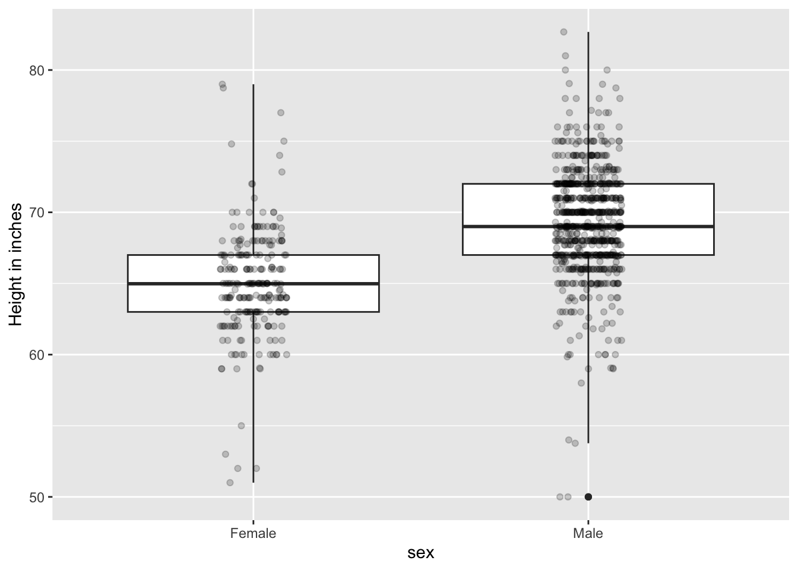
Now contrast and compare these three plots, based on exactly the same data:
Notice how much more we learn from the two plots on the right. Barplots are useful for showing one number, but not very useful when we want to describe distributions.
Facet grids
As the name implies, facet_grid can make more than just side-by-plots. If we specify variables on boths sides of the “~”, we get a grid of plots.
gapminder::gapminder %>%
filter(year %in% c(1952,1972, 1992, 2002)) %>%
filter(continent != 'Oceania') %>%
ggplot(aes(x = lifeExp)) +
geom_density() +
facet_grid(continent ~ year)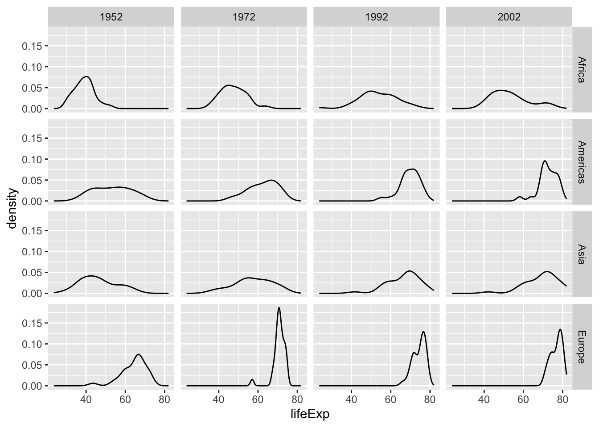
This makes it easy to read the life expectancy distribution over time (left-to-right) and across continents (up-and-down). It makes it easy to see that Africa has spread it’s life expectancy distribution (some improved, some didn’t), while Europe has become more clustered at the top end over time. Faceting in a grid is very helpful when you have a time dimension.
Visual cues to be compared should be adjacent, continued
For each continent, let’s compare income in 1970 versus 2010. When comparing income data across regions between 1970 and 2010, we made a figure similar to the one below, but this time we investigate continents rather than regions.
Note that there are two gapminder datasets, one in dslabs and one in the gapminder package. The dslabs version has more data, so I will switch to that here by using dslabs::gapminder as our data.
dslabs::gapminder %>%
filter(year %in% c(1970, 2010) & !is.na(gdp)) %>%
mutate(dollars_per_day = gdp/population/365) %>%
mutate(labels = paste(year, continent)) %>% # creating text labels
ggplot(aes(x = labels, y = dollars_per_day)) +
geom_boxplot() +
theme(axis.text.x = element_text(angle = 90, hjust = 1, vjust = 0.25)) +
scale_y_continuous(trans = "log2") +
ylab("Income in dollars per day")The default in ggplot2 is to order labels alphabetically so the labels with 1970 come before the labels with 2010, making the comparisons challenging because a continent’s distribution in 1970 is visually far from its distribution in 2010. It is much easier to make the comparison between 1970 and 2010 for each continent when the boxplots for that continent are next to each other:
dslabs::gapminder %>%
filter(year %in% c(1970, 2010) & !is.na(gdp)) %>%
mutate(dollars_per_day = gdp/population/365) %>%
mutate(labels = paste(continent, year)) %>%
ggplot(aes(labels, dollars_per_day)) +
geom_boxplot() +
theme(axis.text.x = element_text(angle = 90, hjust = 1, vjust = .25)) +
scale_y_continuous(trans = "log2") +
ylab("Income in dollars per day") + xlab('Continent and Year') 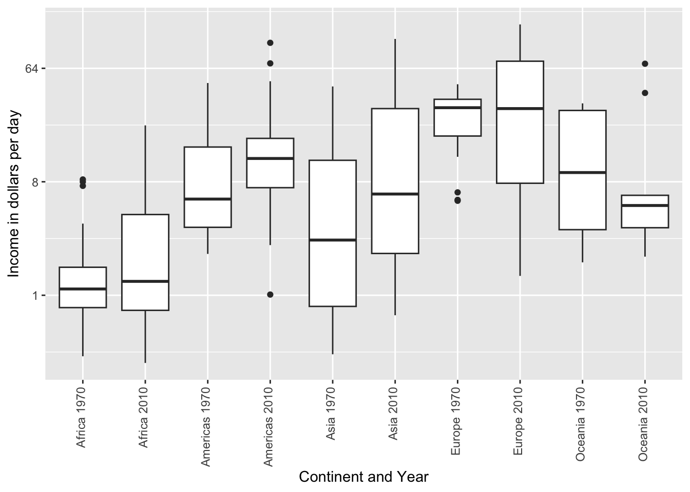
Leave some space
The design maven Edward Tufte emphasizes th eneed for clarifying and empty space. Resist the urge to pack everything into a small layout. Especially in digital formats, space can be inexpensive, and can help attract the eye to your work.
We can control the space around our plots using the theme() function. We’ll cover more details of theme() on Thursday. To add some space around a plot, we use theme(plot.margin = margin(t=2, r = 2, b = 2, l = 2, unit = 'cm')), where the arguments correspond to top, right, bottom, left (in that order). I’m also going to add a black border to the outside so that we can see the boundary of the frame.
dslabs::gapminder %>%
filter(year %in% c(1970, 2010) & !is.na(gdp)) %>%
mutate(dollars_per_day = gdp/population/365) %>%
mutate(labels = paste(continent, year)) %>%
ggplot(aes(labels, dollars_per_day)) +
geom_boxplot() +
theme(axis.text.x = element_text(angle = 90, hjust = 1, vjust = .25)) +
scale_y_continuous(trans = "log2") +
ylab("Income in dollars per day") + xlab('Continent and Year') +
theme(plot.margin = margin(t=2, r = 2, b = 2, l = 2, unit = 'cm'),
plot.background = element_rect(color = 'black', size = 1)) # Adds black borderUse color
The comparison becomes even easier to make if we use color to denote the two things we want to compare. This is an “information carrying dimension” and implemented with an aesthetic mapping. Now we do not have to make the labels column and can just use continent on the x-axis:
dslabs::gapminder %>%
filter(year %in% c(1970, 2010) & !is.na(gdp)) %>%
mutate(dollars_per_day = gdp/population/365, year = factor(year)) %>%
ggplot(aes(x = continent, y = dollars_per_day, fill = year)) +
geom_boxplot() +
theme(axis.text.x = element_text(angle = 90, hjust = 1)) +
scale_y_continuous(trans = "log2") +
ylab("Income in dollars per day")Think of the color blind
About 10% of the population is color blind. Unfortunately, the default colors used in ggplot2 are not optimal for this group. However, ggplot2 does make it easy to change the color palette used in the plots. An example of how we can use a color blind friendly palette is described here: http://www.cookbook-r.com/Graphs/Colors_(ggplot2)/#a-colorblind-friendly-palette:
color_blind_friendly_cols <-
c("#999999", "#E69F00", "#56B4E9", "#009E73",
"#F0E442", "#0072B2", "#D55E00", "#CC79A7")Here are the colors
From Seafood Prices Reveal Impacts of a Major Ecological Disturbance:

There are several resources that can help you select colors, for example this one: http://bconnelly.net/2013/10/creating-colorblind-friendly-figures/.
Use colorblind friendly colors in your projects
You should get in the habit of using colorblind-friendly colors. It will be required on your group projects. Mastering the palette is a helpful skill.
Using a discrete color palette
If you’re simply trying to differentiate between groups by using color, there are many ways of changing your color palette in ggplot. Most use scale_fill_discrete or scale_color_discrete (depending on the aesthetic for which you’re setting the color).
The easiest way of getting good-looking (e.g. non-default) colors is the scale_fill_viridis_d function, which “inherits” (takes the place of and has the properties of) scale_fill_discrete. Viridis has four color palettes and each is designed to be used to maximize the differentiation between colors.
We will subset our dslabs::gapminder dataset to five different years and take a look at what Viridis colors can do across those five:
gp = dslabs::gapminder %>%
filter(year == 1990 | year == 1995 | year==2000 | year == 2005 | year==2010 ) %>%
ggplot(aes(x = continent, y = gdp/population, fill = as.factor(year))) + coord_flip()
gp + geom_boxplot() + labs(title = 'Default')The default uses five different colors plucked seemingly at random. They are actually drawn from a palette of default ggplot colors.
Let’s try Viridis
gp = dslabs::gapminder %>%
filter(year == 1990 | year == 1995 | year==2000 | year == 2005 | year==2010 ) %>%
ggplot(aes(x = continent, y = gdp/population, fill = as.factor(year))) + coord_flip() + labs(fill = 'Year')
viridis_a = gp + geom_boxplot() + labs(title = 'Viridis A') + scale_fill_viridis_d(option = 'A')
viridis_b = gp + geom_boxplot() + labs(title = 'Viridis B') + scale_fill_viridis_d(option = 'B')
viridis_c = gp + geom_boxplot() + labs(title = 'Viridis C') + scale_fill_viridis_d(option = 'C')
viridis_d = gp + geom_boxplot() + labs(title = 'Viridis D') + scale_fill_viridis_d(option = 'D')
grid.arrange(viridis_a, viridis_b, viridis_c, viridis_d)Viridis uses a better palette of colors that, though distinct, have some cohesiveness to them.
We can also use a custom palette, like the colorblind palette from before (see above where we defined color_blind_friendly_cols). We just need to use the type= argument and give ggplot our color-blind friendly palette of colors. If the palette has more entries than we have (N) distinct categories, R reverts to the default.
gp = dslabs::gapminder %>%
filter(year == 1990 | year == 1995 | year==2000 | year == 2005 | year==2010 ) %>%
ggplot(aes(x = continent, y = gdp/population, fill = as.factor(year))) + coord_flip() + labs(fill = 'Year')
custom_a = gp + geom_boxplot() + labs(title = 'Custom palette') + scale_fill_discrete(type = color_blind_friendly_cols)
custom_b = gp + geom_boxplot() + labs(title = 'Custom palette 1-3') + scale_fill_discrete(type = color_blind_friendly_cols[1:3])
grid.arrange(custom_a, custom_b)
Bad R behavior
In the lower plot, we only give it a length-3 vector of colors, and it needs 5, so it returns to default. Unfortunately, it doesn’t warn you as to this behavior. Bad R!
Using a continuous color palette
We may often want to use the color to indicate a numeric value instead of simply using it to delineate groupings. When this is the case, the fill or color aesthetic is set to a continuous value. For instance, if one were to plot election results by precinct, we may represent precincts with heavy Republican support as dark red, swing districts as purple or white, and Democratic districts as blue. The intensity of red/blue indicates how heavily slanted votes in that precinct were in the election. This is known as a color ramp.
Lets plot one country’s GDP by year, but have the color indicate the life expectancy. Whenever you map a continuous variable to a color or fill aesthetic, you get the default color ramp – dark-to-light blue:
dslabs::gapminder %>%
filter(country=='Romania' & year>1980) %>%
ggplot(aes(x = year, y = gdp/population, color = life_expectancy)) +
geom_point(size = 5) +
labs(x = 'Year', y = 'GDP Per Capita', fill = 'Life Expectancy')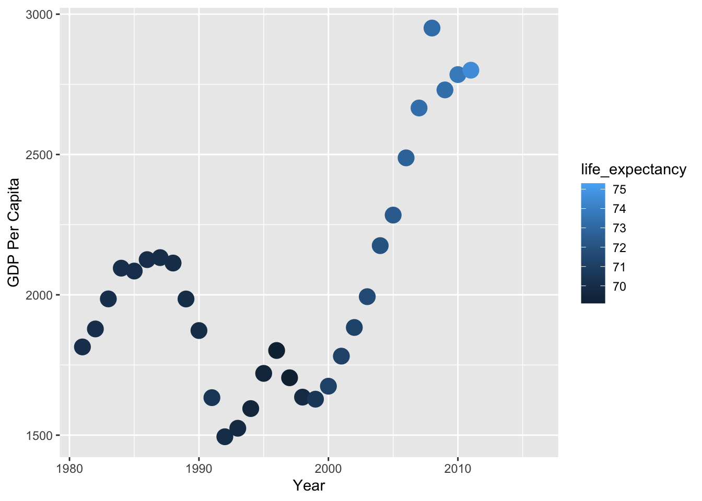
We can see that GDP per capita went up, then down in 1989 (fall of the Soviet Union), then up after that. The color ramp tells us that life expectancy reached 75 years near the end, and it certainly improved in the post-2000 era.
We can set some of the points on the ramp manually - here, the ramp starts at dark blue and ends at light blue, but what if we wanted to start at red, and at blue, and cross white in the middle? Easy! We use scale_color_gradient2 and specify the colors for low, mid, and high, and specify the midpoint at 72.5 years.
dslabs::gapminder %>%
filter(country=='Romania' & year>1980) %>%
ggplot(aes(x = year, y = gdp/population, color = life_expectancy)) +
scale_color_gradient2(low = 'red', mid = 'white', high = 'blue', midpoint = 72.5) +
geom_point(size = 5) +
labs(x = 'Year', y = 'GDP Per Capita', color = 'Life Expectancy')The midpoint specification is extra useful when there is a threshold (like 50% of the vote) that indicates a different qualitative outcome.
The gradient2 method does not always work with the colorblind discrete palette - the colors interpolated may be in the range in which colorblindness tends to be a problem:
dslabs::gapminder %>%
filter(country=='Romania' & year>1980) %>%
ggplot(aes(x = year, y = gdp/population, color = life_expectancy)) +
scale_color_gradient2(low = color_blind_friendly_cols[3], mid = color_blind_friendly_cols[4], high = color_blind_friendly_cols[5], midpoint = 72.5) +
geom_point(size = 5) +
labs(x = 'Year', y = 'GDP Per Capita', color = 'Life Expectancy')gridExtra and grid.arrange
The gridExtra package has been used a few times in this lesson to combine plots using the grid.arrange function. The use is pretty intuitive - you save your plots as objects plot1 <- ggplot(data, aes(x = var1)) and plot2 <- ggplot(data, aes(x = var2)), and then use grid.arrange(plot1, plot2) to combine. The function will align as best it can, and there are more advanced grob-based functions that can adjust and align axes between plots, but we won’t get into them. If we want to set the layout, we can specify nrow and ncol to set the rows and columns.
The very-useful patchwork package is quickly replacing grid.arrange and provides more flexibility.
Footnotes
http://kbroman.org/↩︎
https://www.biostat.wisc.edu/~kbroman/presentations/graphs2017.pdf↩︎
https://github.com/kbroman/Talk_Graphs↩︎
http://paldhous.github.io/ucb/2016/dataviz/index.html↩︎
https://projecteuclid.org/download/pdf_1/euclid.ss/1177010488↩︎
http://mediamatters.org/blog/2013/04/05/fox-news-newest-dishonest-chart-immigration-enf/193507↩︎
http://flowingdata.com/2012/08/06/fox-news-continues-charting-excellence/↩︎
https://www.pakistantoday.com.pk/2018/05/18/whats-at-stake-in-venezuelan-presidential-vote↩︎
https://www.youtube.com/watch?v=kl2g40GoRxg↩︎
If you’re unfamiliar, standard errors are defined later in the course—do not confuse them with the standard deviation of the data.↩︎